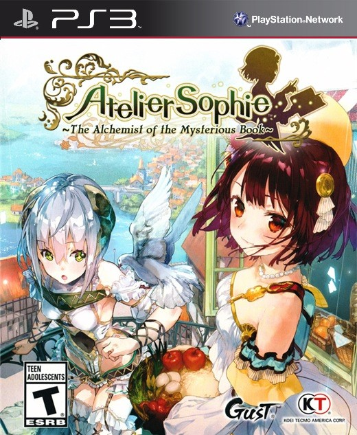

Atelier Sophie™: The Alchemist of the Mysterious Book / ソフィーのアトリエ

Год выпуска: 2015
Жанр: Role-playing
Разработчик: Atelier
Издательство: Koei Tecmo
Язык Интерфейса: Японский
Язык Озвучки: Японский
Язык Субтитров: Японский
Код диска: NPJB00764
Формат: pkg
Описание:
Загадочная сюжетная линия, а также дебют Koei Tecmo , взявший на себя издательские права для западных регионов вместо NIS America . Atelier Sophie была выпущена только в Японии для PlayStation 3.
В игре представлено полностью переработанное мировоззрение по сравнению с более ранними играми серии, а также новая система, ориентированная на алхимию. Софи может получать идеи для рецептов из таких действий, как сбор урожая, исследования, сражения или события, и эти идеи используются в качестве основы для улучшения ее знаний в алхимии. Когда она выполняет алхимию, игроку предоставляются различные заранее определенные формы, представляющие используемые ингредиенты, и он размещает каждую форму на доске-головоломке, которая представляет котел. Этот процесс включает визуальные пробы и ошибки, и если фигуры расположены идеально, игрок получает бонус. Выбранные материалы влияют на качество синтезируемого предмета. Эта система предназначена для обеспечения высокой степени свободы в зависимости от собственного стиля игры игрока.
Действие игры происходит в маленьком городке Кирхен-Белл, месте с теплой атмосферой и редкими дождями, в период зарождения алхимии, еще до того, как она стала широко распространенным искусством. На окраине находится мастерская-студия, которой управляет исключительно девушка по имени Софи, обладающая таинственной силой, которая позволяет ей комбинировать предметы вместе, чтобы создавать совершенно разные предметы. Без наставника или справочника, который мог бы научить ее, ее попытки алхимии снова и снова терпят неудачу. Однако однажды она натыкается на таинственную книгу, которая движется и говорит по собственной воле. Цель Софи - восстановить воспоминания книги и ее прежнюю человеческую форму.